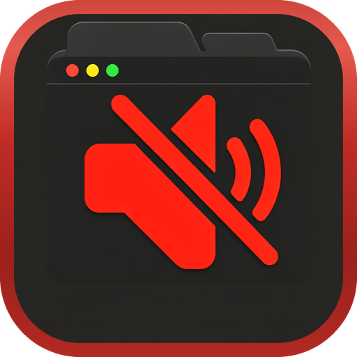

Automatically mutes every background tab so only the one you're focused on plays audio. No more competing sounds from forgotten tabs.
Download on the App Store For iPhone, iPad, and MacBackground tabs are automatically muted the moment you switch away. Only the active tab plays audio, no configuration needed.
Videos in PiP mode keep playing audio even when their tab is in the background. Never lose your video's sound.
Toggle muting on or off instantly with Ctrl+Shift+M. Customize it in Safari's extension settings.
Keep specific sites unmuted at all times. Perfect for music players, video calls, or any site that should always have audio.
Switching between Safari windows automatically mutes the previous window's tabs. Audio follows your focus everywhere.
Fully localized across 33 languages, so Auto Mute Tab speaks yours.
Sites like YouTube, Twitch, and X route audio through the Web Audio API, which slips past the normal tab mute. Auto Mute Tab silences them anyway.
Keep one background tab audible while everything else stays muted, perfect for music or a call.
Silence the tab you are looking at with one tap, without leaving the page.
A dedicated page lists every tab Auto Mute is muting, with one-click unmute.
Add music players, video calls, or any site that should never be muted.
Audio comes back correctly after your Mac or device wakes from sleep, a case many tab muters miss.
A background tab that suddenly starts playing is muted the instant it makes sound.
No accounts, no tracking, no network requests, and near-zero impact on browsing speed.
Download Auto Mute Tab from the App Store. It's a lightweight Safari extension.
Open Safari Settings, go to Extensions, and enable Auto Mute Tab. Grant permission for all websites.
That's it. Background tabs go silent automatically. Switch tabs and only the focused one plays audio.
Multiple tabs playing audio at the same time is distracting. Auto Mute Tab ensures only one tab is heard at a time, automatically and instantly.
Handles HTML5 video and audio, Web Audio API, autoplay videos, iframes, and dynamically loaded media. If it makes sound, Auto Mute Tab controls it.
No analytics, no tracking, no accounts, no servers. Everything runs locally in Safari. Your browsing stays completely private.
Requires iOS 15, iPadOS 15, or macOS 14 or later, with Safari. Available in 33 languages.
Privacy-first apps for macOS, iOS, and Safari.